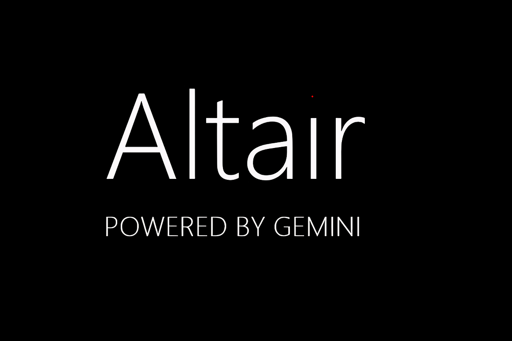
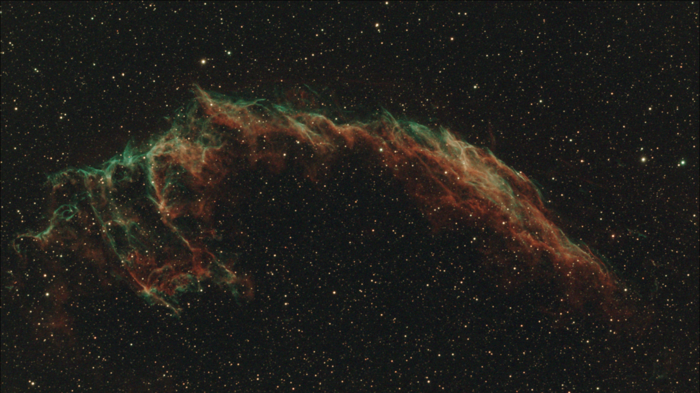
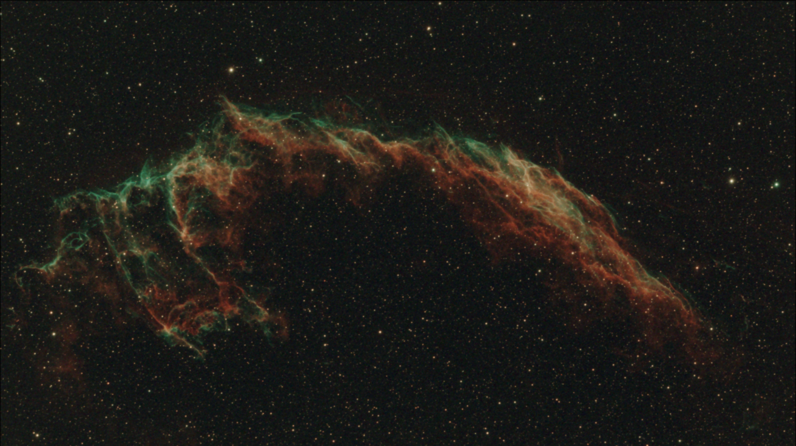

Workflow od razu po starcie
Wczytaj obraz, popraw tonalnosc, uruchom analize i zapisz wynik bez opuszczania aplikacji.
Astro Ai Plus laczy klasyczne narzedzia edycji z funkcjami astro: analiza FWHM/SNR, plate solving, StarNet++, deepSNR, mozaika oraz animacje 3D FLY.

Wczytaj obraz, popraw tonalnosc, uruchom analize i zapisz wynik bez opuszczania aplikacji.
Integracja z Astrometry.net, StarNet++, deepSNR i asystentem Altair (Gemini).
Obsluga .fits, .tiff, .png, undo/redo, warstwy i historia krokow.
Przesun suwak, aby porownac obraz przed i po odszumianiu AI.
Sprawdz, jak funkcja Star Shrink zmniejsza gwiazdy i poprawia czytelnosc obiektu.


Graficzna os czasu projektu (z gory na dol). Na ten moment zawiera 1 punkt.
Uruchomienie strony z filmem intro, porownaniem AI i przyciskami pobierania.
Miejsce na nastepny kamien milowy projektu Astro Ai Plus.
Zobacz, jak wyglada finalna animacja wygenerowana narzedziem 3D FLY.
Pobierasz gotowa wersje Linux z Google Drive (folder z aplikacja i _internal).
Do projektu dolaczony jest prosty serwer update API oraz klient z GUI do publikacji i sprawdzania nowych wersji.
Przykladowe lokalne API: http://127.0.0.1:8787
Tak, jesli masz komputer z Linuxem x64, minimum 8 GB RAM i procesor klasy Intel i3 / Ryzen 3 lub nowszy. Dla AI i duzych plikow rekomendowane jest 16 GB RAM oraz mocniejszy CPU/GPU.
Tak. Wiekszosc narzedzi dziala lokalnie, a internet jest potrzebny tylko dla funkcji online, takich jak Astrometry.net i sprawdzanie aktualizacji.
Program wspiera miedzy innymi .fits, .tiff i .png, wraz z historia operacji undo/redo.
Tak. Na stronie i w aplikacji dostepne sa porownania Before/After, dzieki ktorym latwo oceniasz efekt odszumiania i innych narzedzi AI.
Nie jest to wymagane, ale karta graficzna mocno przyspiesza niektore operacje. Na samym CPU aplikacja tez dziala, tylko wolniej.
Sprawdzanie wersji odbywa sie przez update API. Po wykryciu nowego wydania pobierasz paczke i podmieniasz folder aplikacji.
Tak, aplikacja wspiera historie edycji z undo/redo, co pozwala bezpiecznie testowac rozne ustawienia obrobki.
Tak, Astro Ai Plus integruje sie z Astrometry.net i pozwala wykonac plate solving bez recznego przepisywania danych.
Dokumentacje znajdziesz w plikach README oraz pod przyciskiem „Czytaj dokumentacje” na stronie startowej.
Tak. Funkcja 3D FLY pozwala wygenerowac finalna animacje na podstawie przygotowanego obrazu i zapisac wynik do pliku wideo.
Subscribe on Youtube. https://www.youtube.com/@AstroPhotoSoft